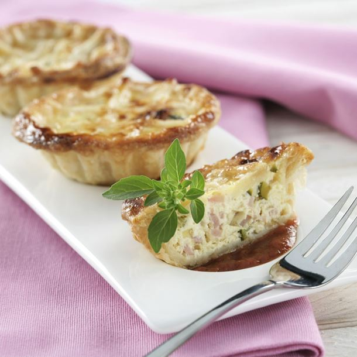

Reprendre de plats célèbres de façon minimaliste est une tendance de plus en plus répandue pour réussir un apéro dînatoire original (ex : mini burger, flammekueche…).
Proposer des mini quiches lorraines sans pâte est un moyen simple et efficace de surprendre ses invités, et d’ouvrir leur appétit.
Cette recette étant relativement aisée, elle ne vous prendra pas beaucoup de temps.
En plus de ça, elle est très économique ! Quelques lardons, de la crème fraîche et des œufs, et le tour est joué !
Qui a dit qu’il fallait absolument faire compliqué pour faire original ? En plus la quiche lorraine, tout le monde adore ça ! Sans pâte, vous obtiendrez une quiche lorraine légère.
Source :
Ingrédients